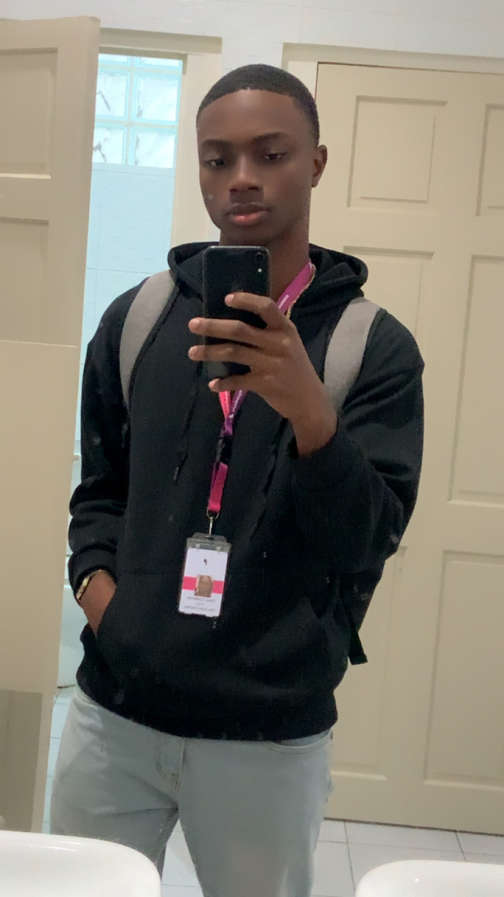

Get to know me

Modern software built with clarity and purpose.
I'm Dave Truideman. I build web applications that combine polished interfaces with reliable performance. My process centers on user needs, scalable code, and consistent growth.
Background
I'm Dave Truideman, a passionate technology enthusiast, musician, and football referee. I enjoy creating modern web applications that combine clean design, responsive user experiences, and reliable functionality. My focus is on continuous growth, learning new technologies, and building solutions that make a positive impact.
Currently, I am pursuing my university studies (2025–2026) while developing my skills in web development, networking, and software engineering. I enjoy turning ideas into practical digital solutions using technologies such as HTML, CSS, JavaScript, React, Node.js, Git, and MySQL.
Beyond technology, I have been a musician since 2016, serving with In God's Heart Music as both a guitarist and bass guitarist. Music has helped me develop creativity, discipline, and teamwork—qualities that I also bring to my work as a developer.
I am also a football referee with the SVB (Suriname Football Association), where I apply strong decision-making, leadership, and communication skills in a fast-paced environment.
Whether I'm developing software, performing music, or officiating a football match, I strive to learn continuously, work collaboratively, and deliver my best in everything I do.
Education

B.S. in Computer Science
UNASAT | 2025–Present
- Software engineering fundamentals
- Web architecture and system design
- Responsive interfaces and accessibility


Interests
When I am not coding, I play music to stay creative and energized. I enjoy 🥁 drums, 🎸 guitar, ⚽ football, bass, and recorder, and I find that music helps me approach technical challenges with fresh perspective.
Philosophy
Keep learning, stay disciplined, and use your talents to make a positive impact. Whether on the football field, in music, or in technology, growth comes through dedication, teamwork, and continuous improvement.